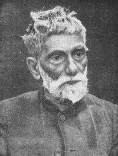

Acharya Sir Prafulla Chandra Ray also spelled Prafulla Chandra Rây CIE (Bengali: Praphulla
Chandra Ray; 2 August 1861 – 16 June 1944) was a Bengali chemist, educator and entrepreneur.
The Royal Society of Chemistry honoured his life and work with the first ever Chemical Landmark Plaque
outside Europe. He was the founder of Bengal Chemicals & Pharmaceuticals, India's first pharmaceutical
company. He is the author of A History of Hindu Chemistry from the Earliest Times to the Middle of Sixteenth
Century (1902).
Prafulla Chandra returned to India in the first week of August 1888 and subsequently joined Presidency
College, Calcutta as temporary Assistant Professor of Chemistry in 1889. Ray who had a doctorate in science from
Edinburgh University felt deeply aggrieved when even with his excellent educational credentials he was not able to
secure a position within the Imperial service (his academic position was within the 'provincial service') and attributed
this to the discriminatory attitude of the ruling government towards native intelligentsia. He complained to the top
officials of the government but with no effect.
In 1896, he published a paper on preparation of a new stable chemical compound: mercurous nitrite.[4] This work
made way for a large number of investigative papers on nitrites and hyponitrites of different metals, and on nitrites
of ammonia and organic amines. He started a new Indian School of Chemistry in 1924.
Prafulla Chandra retired from the Presidency College in 1916, and joined the Calcutta University College of Science
(also known as Rajabazar Science College) as its first "Palit Professor of Chemistry", a chair named after Taraknath
Palit. Here also he got a dedicated team and he started working on compounds of gold, platinum, iridium etc. with
mercaptyl radicals and organic sulphides. A number of papers were published on this work in the Journal of the
Indian
Chemical Society.
In 1936, at the age of 75, he retired from active service and became Professor Emeritus. Long before that, on the
completion of his 60th year in 1921, he made a free gift of his entire salary to the Calcutta University from that date
onward, to be spent for the furtherance of chemical research, and the development of the Department of Chemistry
in the University College of Science.
He had written 107 papers in all branches of Chemistry by 1920.[4]
Literary works and interests
He contributed articles in Bengali to many monthly magazines, particularly on scientific topics. He published the first volume of his autobiography Life and Experience of a Bengali Chemist in 1932, and dedicated it to the youth of India. The second volume of this work was issued in 1935.
In 1902, he published the first volume of A History of Hindu Chemistry from the Earliest Times to the Middle of Sixteenth Century.[5] The second volume was published in 1909.[6] The work was result of many years' search through ancient Sanskrit manuscripts and through works of orientalists.
Social service
In 1923, Northern Bengal suffered a flood which made millions of people homeless and hungry. Prafulla Chandra organised Bengal Relief Committee, which collected nearly 2.5 million rupees in cash and kind and distributed it in the affected area in an organised manner.
He donated money regularly towards welfare of Sadharan Brahmo Samaj, Brahmo Girls' School and Indian Chemical Society.[7] In 1922, he donated money to establish Nagarjuna Prize to be awarded for the best work in chemistry.[7] In 1937, another award, named after Ashutosh Mukherjee, to be awarded for the best work in zoology or botany, was established from his donation.[7]
BACK TO MAIN PAGE